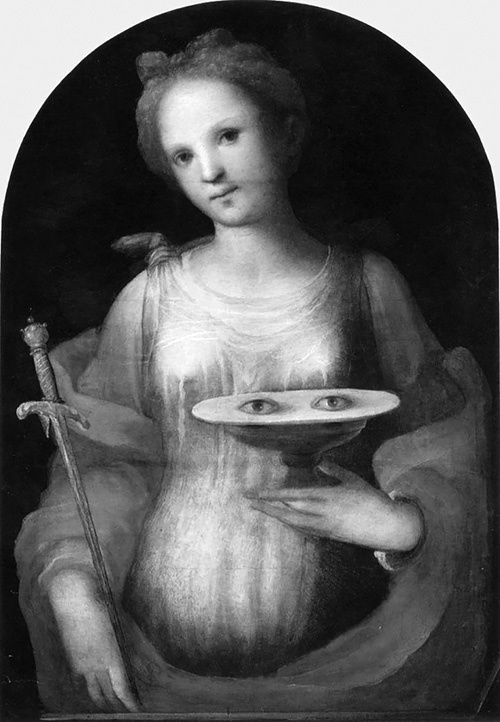

基督教与多形态倒错性
根据人们的普遍看法，文化（社会、道德、宗教）规范性提倡所谓的自然性行为（异性性交），倾向于禁止或压制 驱力 性行为，这种性行为被视为 倒错的、非社会性的，在自身之外没有任何目的，因此摆脱了个人和社会的控制手段。......但事实真的如此吗？除了非常肤浅的层面之外，这种看法难道不可能是大错特错的吗？基督教通常被视为禁止驱力性行为、只提倡 "有目的的 "生殖结合这种态度的典范。然而，只要稍微转换一下视角（而且是在正确的一端），就会得到一幅截然不同的画面，就像 拉康 在下面这段话中所做的那样：
基督，即使从死里复活，也是以他的身体为价值的，他的身体是与他同在的方式吞并 (incorporation)-口腔驱力--基督的妻子，也就是所谓的教会，用它来满足自己，对交媾没有任何期待。
在基督教影响之后的一切中，尤其是在π艺术中......一切都是身体的展示，唤起原乐--你可以相信一个刚从意大利教堂狂欢回来的人的证词，但没有交媾。如果没有交媾，那就不是意外。它在那里就像在人类的现实中一样格格不入，然而它却为人类的现实提供了幻想的寄托。(拉康 1999, 113)
这段令人惊叹而又掷地有声的文字有何意义？另一方面，"交媾 "似乎有某种深刻的破坏性。对于它所提出的那种（社会）纽带，基督教并不需要交媾，它的功能是多余的元素，是（理想的）被需要的之上的东西，因而是令人不安的。这就是为什么即使是 "最纯粹的 "生殖性交媾也与罪孽有关。或者说，正如圣奥古斯丁所指出的那样：对它的惩罚，以及它的延续--它是原初造物的后续附加物。换句话说，在圣奥古斯丁的论述中，性本身就有问题，足以被视为一种惩罚、一种诅咒。
事实上，"自然的（生殖的）性交 "在宗教想象中是被完全禁止的，而同样的想象并没有从诸如形象被封为圣人的圣人吃另一个人的排泄物中消失--这种行为通常被编入倒错者的顶峰。如果我们看一看基督教殉难的著名故事（和图片），它们令人惊讶地充满了严格意义上的弗洛伊德式局部对象：一个真正的形象与不同局部驱力有关的对象的宝库。圣阿加莎被割下的乳房和圣露西被挖出的眼睛是最著名的两个形象，不同的艺术家描绘了数百次。这里仅举两个例子。
洛伦佐-里皮（1638/1644 年）创作的《圣阿加莎》；维基共享资源。

圣露西，多梅尼科-贝卡夫米（1521 年）作；维基共享资源。
从这个角度看，基督教的确可以说是围绕着 "部分驱力及其所带来的激情或满足在基督教的许多方面都大量存在，并构成其原乐身体的重要部分 "这一官方想象而展开的。在这个确切的意义上，我们甚至可以说，在其力比多方面，基督教大量依赖于属于"幼儿性欲 (infantile sexuality)"（弗洛伊德定义为多样态性倒错 (polymorphous perversity)）的东西，即属于满足和部分对象衍生的纽带，但不包括性结合。纯粹的享乐，"为了享乐而享乐"，在这里并不完全是被禁止的；被禁止或被压制的是它与性的联系。
换句话说，对于基督教来说，不承认这些 多样态 倒错的 满足 驱力 为性的 多样态 倒错的 满足 驱力 显然是最重要的，但同时又不禁止它们本身。但这究竟是为什么呢？为什么不是像人们经常错误地认为的那样，只是为了打击所有的享乐，而是为了尽可能干净利落地把享乐从性中分离出来；也就是说，拒绝在性术语中构想享乐？这就好像社会对 "自然性"（交配）施加的强大压力，是为了掩盖自然性本身的深渊否定性，而不是为了阻止所谓的破坏性的部分驱力。
换句话说，这种质疑与其说把我们带入了性的文化层面，不如说带入了性的 "自然 "层面。就好像这个 "自然 "的方面实际上是最有问题的，最不确定的。在这一点上，自然本身似乎有什么地方出了大问题。问题并不在于自然 "总是--已经是文化的"，而在于自然首先缺少某种东西才能成为自然（我们的他者 (Other)）。文化并不是一种中介、分裂、变性的自然性的东西（比如说，据说存在于动物身上的自然性）；它产生于自然中某种东西（作为性自然）缺乏的地方。
一种说法是，不存在性本能，也就是说，不存在能够可靠地指导性行为的性知识（"法则"）。然而，这种说法本身可以有两种理解。根据通常的观点，这种性本能（作为可靠的自动驾驶）的缺乏被认为是人类特有的东西，是由人类的体质（以及由此产生的文化）引起的。根据这一推理，我们通常会说，自然界（动物）有性本能，而人类没有性本能（因此，人类是自然界的例外）。因此，在最根本的层面上，人类被视为偏离了自然，尤其是偏离了动物。在人类身上发生了一些特殊的事情，使其从自然中衰退，并使自然法则在人类领地上的运作方式复杂化。我们将在第四章更详细地讨论人类与动物的差异，因此，让我们在此简要地勾勒出另一种可能的视角：不是将人类视为自然的例外，而是将人类视为自然的某一点，在这一点上，人类对 "知识"（性法则）的缺乏获得了一种独特的认识论形式。从这个角度看，人性不是自然的例外，不是自然的偏离，而是自然自身固有否定性的具体表述点。自然中存在着知识（实在之知 (knowledge in the real)，拉康称之为知识），但这种知识在性化这一点上是缺乏的，这包括有性别的动物。
那么，人类动物与其他（性）动物之间的区别是什么？这种区别不是基于人类对自然的例外，而是基于性自然本身的某种僵局的另一种表述？我们的答案是：人的性欲是与性方面的关系相关的不可能性（本体论 否定性）作为这种不可能性出现的点，在现实中 "注册 "为其一部分。它在 弗洛伊德 发现的单数形式中登记为 无意识 的单数形式。
如果我们从性化（自然界不知道如何在性方面的意义上存在，我们与其他有性动物都有这个问题）这一点出发，那么人类动物的区别就在于它知道（它不知道）。然而，这里的关键并不仅仅在于人类意识到了，意识到了自然界中这种性知识的匮乏；相反，正确的说法应该是，不知道的方式：一种简单的方式，一种实际上涉及一种独特的知识的方式，即无意识。动物不知道（它们不知道）。并非完全开玩笑，我们可以说，性对于动物来说不是问题，因为它们不知道它实际上是有问题的，它们是"无意识 的"（这并不等于说我们没有意识到它）。无意识（就其形式本身而言）是某一本体论 否定性的现实在此现实自身中的 "积极 "记录方式，它的记录方式并不依赖于知道与不知道、意识到或意识不到某物之间的简单对立。原因在于，问题的关键所在恰恰不是 “某物 (something)”（某种事物，某种我们可以意识到或意识不到的事实），而是 否定性，它本身只有通过自身的否定才能被感知。无意识 某事 "并不仅仅意味着一个人不知道它；相反，它意味着一种自相矛盾的双重性，其本身是双重的或分裂的：它涉及不知道我们知道（......我们不知道）。这是无意识的最佳定义之一（齐泽克 2008, 457）。正如 拉康 所说，无意识 知识是一种不知道自己的知识。
弗洛伊德式 无意识 这一奇异而革命性的概念，因此并不仅仅是相对于 "知 "的 "不知"。它涉及的是一种作为 "知 "的形式的独特的 "不知"。有一种特殊的知识，它只存在于无意识的形式之中，作为无意识的形式，它的作品和形式。我不是在谈论某种先验的直觉--后者很可能存在，但它与 无意识 及其结构毫无关系。无意识 是 实存 的 本体论 否定性 与性（"没有性关系"）有关的形式。由于它与知识的单一模式/分裂（"我不知道我知道"）相联系，这种形式实际上是认识论的。
现在，让我们把这一点与我们先前的调查联系起来：它能告诉我们基督教传统中（纯粹生殖联姻）规范的功能是什么？这一规范究竟禁止或掩盖了什么？它似乎恰恰涉及本体论 性化的否定性和性本身。在强加（纯粹生殖性联姻的）规范时，人们试图隐藏或压制的不是简单的其他东西（例如，倒错的放荡，或纯粹的自我延续享乐），而是不存在的东西（缺失的东西）。换句话说：被禁止的不是性方面的的符号（或其形象），而是对这种符号的非实存的（无意识）认识。性被以各种方式管制，不是因为它的放荡，而是因为它意味着（和 "传播"）对这种本体论 否定性的知识。
《圣经》中最典型的故事将性和知识与原初罪的场景密不可分地联系在一起，这个故事的方向是正确的。亚当和夏娃吃了知识树上的果子，究竟知道了什么？在《圣经》中，这一点并不清楚。不过，可以肯定的是，"善恶"（rov wa-ra）--在 "善恶树 "的表述中--并不是指对善恶的认识和区分（这已经是一种非常有倾向性的解读了），而实际上是一个固定的表述，表示 "一切"（就像我们说 "这个和那个 "一样）。因此，《圣经》只告诉我们，当亚当和夏娃吃了知识树上的果子后，知识就传授给了他们。如果我们大胆地对这句话进行拉康式解读，我们还可以补充一句：不是关于这个或那个特定事物的知识，而是知识本身的（能指）结构。而与"（能指）知识本身的结构 "相伴的是无意识的空白：后者正是知识与信息或数据的区别所在。换句话说，传给他们的正是作为知识构成要素的 "Urverdrängung "的缺口。这就是为什么他们一旦吃了知识之树的果实，直接就会产生一种影响，即他们发现自己赤裸的身体是可耻的。这种羞耻是正确的本体论：它出现在缺乏能指（-1）的地方，因为能指缺乏内置于知识的结构中：它出现是因为那里没有出现能指...
在《圣经》中，知识与性之间的这种重要联系并不仅仅局限于原初罪的场景，而是有着进一步的、反复的坚持。因此有了 "圣经意义上的知识 "这个成语。圣经》提及性交的这种特殊方式（"了解对方"）显然与我们在《圣经》中发现的其他最常见的委婉性交方式不同："进入"、"躺在一起 "和 "进入"。这些只是描述性的委婉语。另一方面，在知识被用来指代性交的方式中，我们难道不能认识到 能指 性方面的 关系陷入自身 本体论 空虚的痕迹，而这种痕迹只是作为一种特殊的（否定的）认识论 分数 而存在吗？也就是说：也就是说："在《圣经》的意义上认识他人 "是在大他者 (the Other)知识缺乏的地方。而从宗教的角度来看，大他者 (the Other)中知识的缺失（能指中性方面的关系的缺失）并非小事。因此，我们感到羞耻。看到赤裸的身体之所以 "可耻"，不是因为这些身体本身，而是因为这些赤裸的身体未能传达的东西，即 性方面的 关系。
如果我们在 想象 的层面上考虑性行为，就会发现类似的 表象 情况：我们在 表象 的性行为中看到的只是身体享乐 与其他身体的部分发生关系。用拉康的的话说：
正如 康德式 所强调的那样，萨德 只能享乐 大他者 (the Other) 身体的一部分，原因很简单，我们从未见过一个身体完全包裹住大他者 (the Other) 的身体，将其包围并吞噬。这就是为什么我们必须把自己限制在仅仅给它一点挤压，就像这样，用前臂或其他任何东西--哎唷！ （拉康 1999, 23）
规范（对性的规范性规定）正是在表象的这一缺失点上出现的。更确切地说，规范可以被视为取代了 "人们从未见过的"形象，即身体完全包裹着大他者 (the Other)的身体。这形象，就其不可能性而言，是它的另一面，是规范的幻想基础；是它帮助维持了规范，以及我们对规范的共谋。它是由规范的强加所支撑的幻想，并反过来支撑着规范：性方面的 关系的幻想。
然而，在这个关头需要指出的另一个关键点是，非关系 并不是简单的缺位关系，它本身就是一个真实的、甚至是实在的关系。这意味着什么呢？我们决不能把失误关系的实存 设想为一种幻想，而精神分析会请我们摆脱这种幻想，转而接受局部的驱力和转瞬即逝的快乐（这里和那里的 "挤压"）的现实作为终极的原始现实、这又回到了似乎是完整的驱力的肯定性（在其非常局部的特征中）与在性（作为关系）中起作用的否定性之间的错误对立。精神分析 告诉我们的并不是，由于这种非关系，我们只能触及到局部的、转瞬即逝的快乐和满足（在这里和那里 "挤压"）。这种说法更为有力：这些 部分快乐 和 满足 就是全部。性关系并不只是我们对不存在的东西的幻想，但出于某种原因，我们希望它存在（我们为什么如此渴望它的存在，在这种论证中并不清楚）。如果我们可以通过在这里和那里 "挤压"，通过享乐对方身体的某些部分（或者我们自己的身体）来获得实际的满足关系，那么像非实存性方面的关系这样的东西为什么会 "无法忍受 "呢？性关系的缺失是真实的，因为作为缺失或否定性，它内在于存在的事物之中，以一种重要的方式决定着它的逻辑和结构。它们并不是独立于 否定性 而存在的，这样我们就可以在没有更好办法的情况下求助于它们。它们本质上是由 "缺乏更好的东西 "构成的：它们是缺乏更好的东西（缺乏性实体或能指）在现实中存在的方式。简单地说，这并不是说，我们一方面有肯定性的驱力和它们的满足的纯粹的肯定性，另一方面又有这种（灾难性的）想法，即我们需要有别的或更多的东西，即让它们形成或代表一种关系。既然这没有发生，我们就会感到难过，并竖起对关系的幻想。对关系的幻想（和要求）来自 驱力 的结构本身（内部）。现在，让我们更仔细地看看这意味着什么。